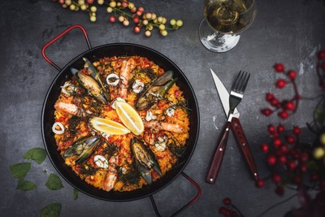
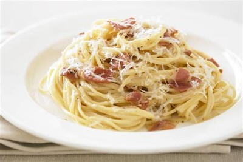
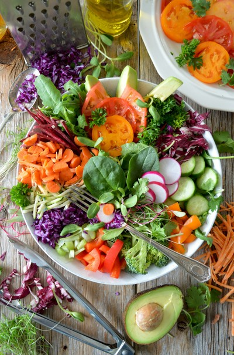
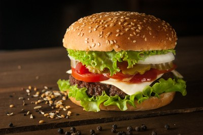
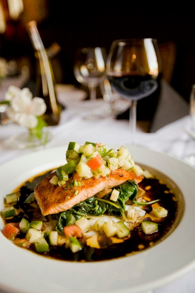

Paella
Fons d’arròs amb safrà, verdures i carns/marisc, ideal per compartir en família.
Veure detallMenjar mediterrani modern
Explora receptes tradicionals i tècniques modernes amb ingredients frescos per a totes les pantalles.

Fons d’arròs amb safrà, verdures i carns/marisc, ideal per compartir en família.
Veure detall
Pasta al dente amb salsa cremoses tradicionals com carbonara i arrabbiata.
Veure detall
Fresca i saludable amb formatge feta.
Veure recepta
Submergeix pa pita apte per compartir.
Veure recepta
Plat ric en Omega-3 amb herbes mediterrànies.
Veure recepta